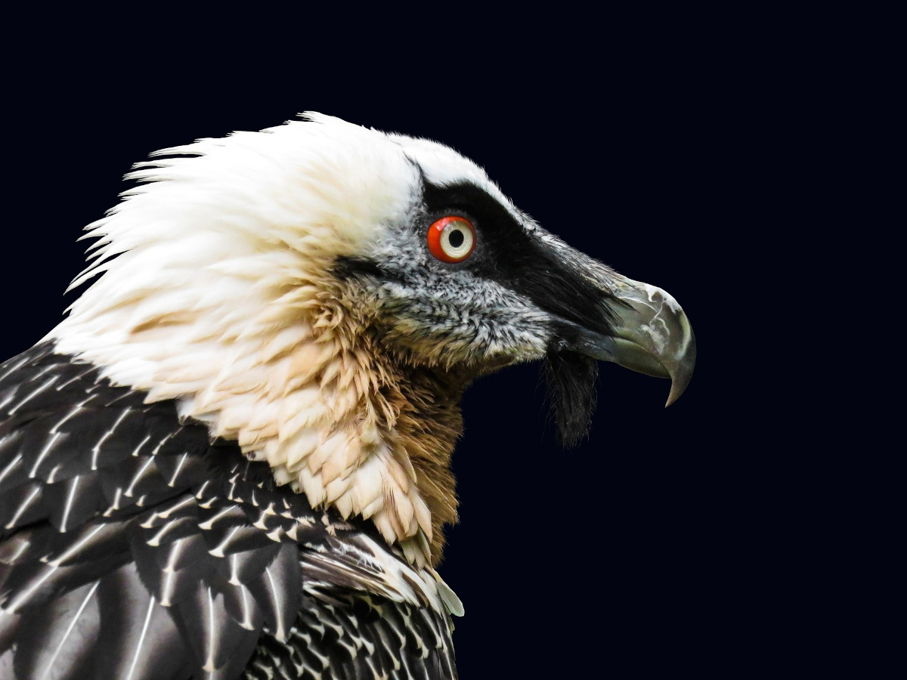
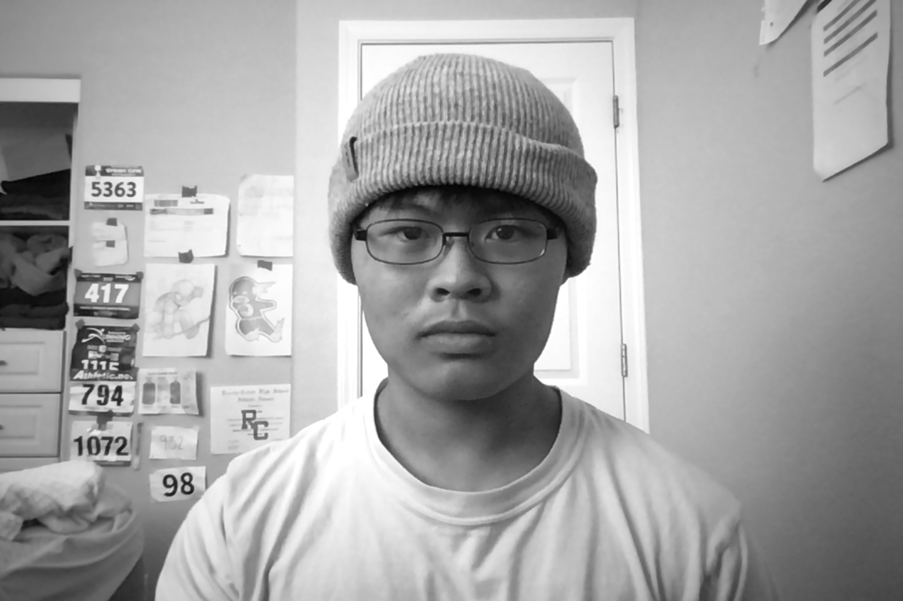
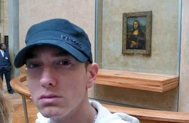

We are a growing community and want to help prevent the threats to bearded vultures. The International Union for Conservation of Nature has listed bearded vultures as near threatened since 2014, compared to its "least concern" status from before.
Learn more about their conservation status and population here.
Our mission is to stop the invasive occupation and actions in habitats that bearded vultures live in, stop trophy hunting
, and
encourage reintroduction into places bearded vultures once previously lived in.
The Vulture Conservation Foundation has more information on conserving bearded vulture populations and additional facts. Click here
Upon witnessing a clip on Reddit of a bearded vulture consuming a whole bone whole, I knew this would be my life passion from the very start. Founding this organization has led to great progress and research into bearded vulture protection policies, and I plan to expand this website and project very far.
For all intents and purposes, this is not the real Eminem.
I just met this Reese guy and he seems pretty cool.